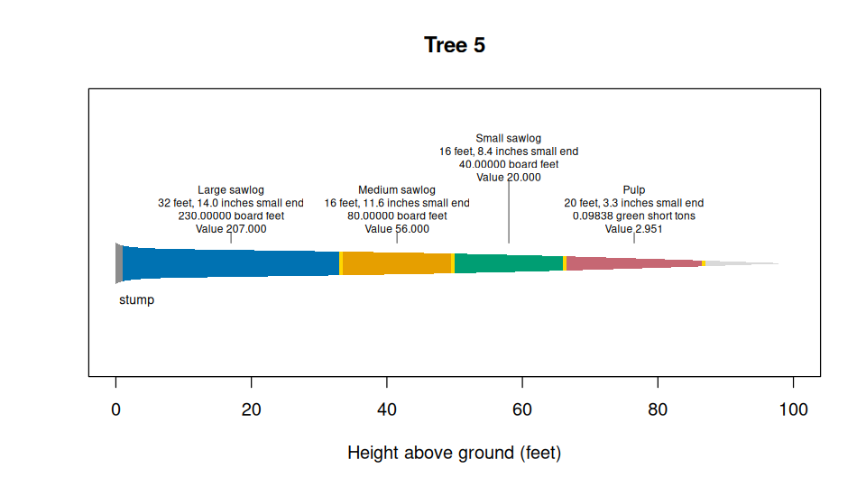

merchandiser turns tree measurements, product specifications, and located defects into logs, scale, and residual stem sections. It also fits heights and taper equations, measures stems, and estimates dry biomass and carbon.
Install
## Install from the package repository
library(remotes)
## Install the package
install_github(repo = 'siskiyoubiometrics/merchandiser')Select and scale logs
The shipped tree is a synthetic example. The four products below are three Scribner sawlogs and green-ton pulp, with illustrative prices in United States dollars. Product order in products() sets cutting priority.
## Load the packages
library(merchandiser)
library(dplyr)
## Select the example tree
tree <- example_trees %>%
filter(tree_id == 5)
## Define each product: lengths, small end limit, trim, unit, and price
large <- product(product = 'Large sawlog',
min_length = 32, ## feet
max_length = 32, ## feet
min_sed = 12, ## inches, small end diameter
inside_bark = TRUE, ## diameter limit is inside bark
trim = 0.5, ## feet added to each log
volume_unit = 'scribner', ## Scribner board feet
price = 900, ## dollars
price_per = 1000) ## per thousand board feet
medium <- product(product = 'Medium sawlog',
min_length = 16, ## feet
max_length = 16, ## feet
min_sed = 10, ## inches, small end diameter
inside_bark = TRUE, ## diameter limit is inside bark
trim = 0.5, ## feet added to each log
volume_unit = 'scribner', ## Scribner board feet
price = 700, ## dollars
price_per = 1000) ## per thousand board feet
small <- product(product = 'Small sawlog',
min_length = 16, ## feet
max_length = 16, ## feet
min_sed = 6, ## inches, small end diameter
inside_bark = TRUE, ## diameter limit is inside bark
trim = 0.5, ## feet added to each log
volume_unit = 'scribner', ## Scribner board feet
price = 500, ## dollars
price_per = 1000) ## per thousand board feet
pulp <- product(product = 'Pulp',
min_length = 8, ## feet
max_length = 20, ## feet
min_sed = 3, ## inches, small end diameter
inside_bark = TRUE, ## diameter limit is inside bark
trim = 0.5, ## feet added to each log
volume_unit = 'green_ton', ## green short tons
price = 30, ## dollars
price_per = 1) ## per ton
## Combine the products in cutting priority order
specifications <- products(large, medium, small, pulp)
## Select logs from the tree
result <- merchandise(tree_id = tree$tree_id,
dbh = tree$dbh,
ht = tree$ht,
spcd = tree$spcd,
products = specifications,
model = tree$model)| Log | Product | Length (ft) | Small end inside bark (in) | Scale | Unit | Value (USD) |
|---|---|---|---|---|---|---|
| 1 | Large sawlog | 32 | 14.017 | 230.000 | board feet | 207.000 |
| 2 | Medium sawlog | 16 | 11.643 | 80.000 | board feet | 56.000 |
| 3 | Small sawlog | 16 | 8.413 | 40.000 | board feet | 20.000 |
| 4 | Pulp | 20 | 3.341 | 0.098 | green short tons | 2.951 |
## Draw the selected logs
plot(result)
scale uses the unit shown in volume_unit. The result also contains residual intervals, tree status, and assumptions.
Biomass and carbon
biomass() returns dry mass and carbon in metric tonnes from diameters in inches and heights in feet. The default uses national coefficients.
## Select three example trees
trees <- example_trees %>%
slice_head(n = 3)
## Estimate dry biomass and carbon in metric tonnes
mass <- biomass(dbh = trees$dbh,
ht = trees$ht,
spcd = trees$spcd)| Tree | Stem wood (tonnes) | Stem bark (tonnes) | Branches (tonnes) | Carbon (tonnes) |
|---|---|---|---|---|
| 1 | 0.224 | 0.039 | 0.063 | 0.168 |
| 2 | 0.318 | 0.042 | 0.094 | 0.230 |
| 3 | 0.520 | 0.087 | 0.105 | 0.367 |
Package site
- Get started.
- Defining products.
- Recording defect.
- Fitting and completing heights.
- Taper and stem profiles.
- Volumes and green weight.
- Scaling rules.
- Biomass and carbon.
- Pacific Northwest tree list.
- Southern stands.
- Optimal bucking.
- Assumptions and status.
- Taper equation methods.
- Fitting taper equations.
- Stem model calculations.
- Source agreement.
- Identifiers and defaults.
- Function reference.